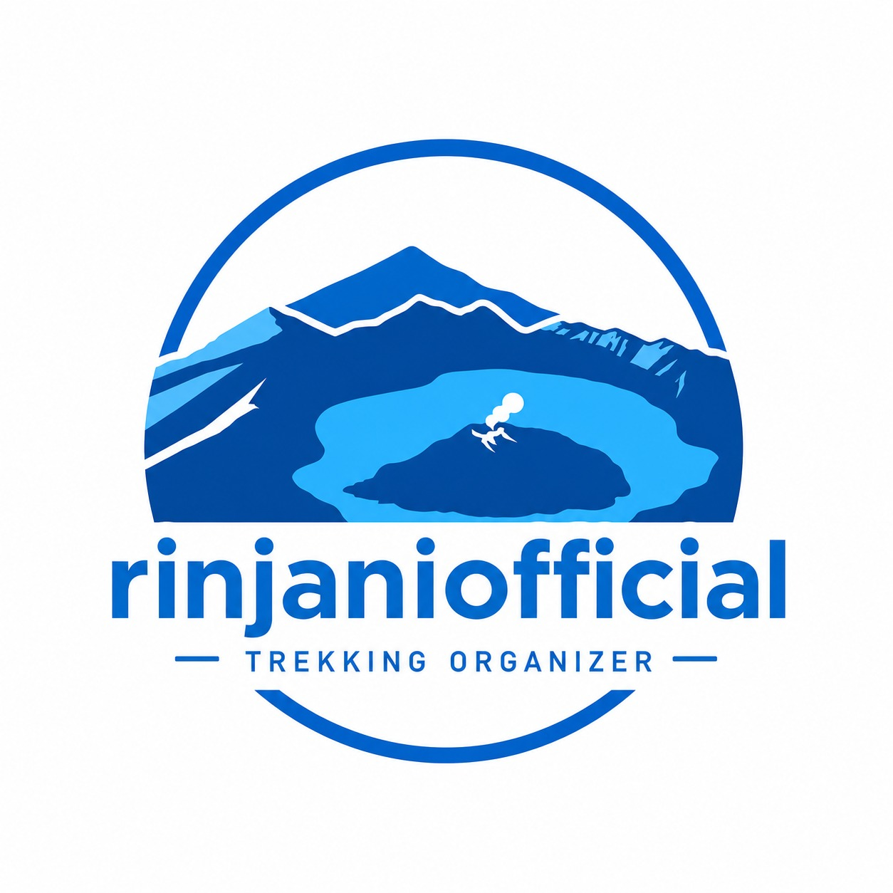
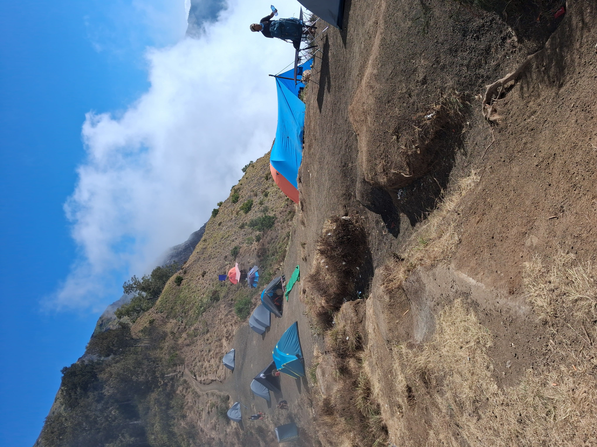
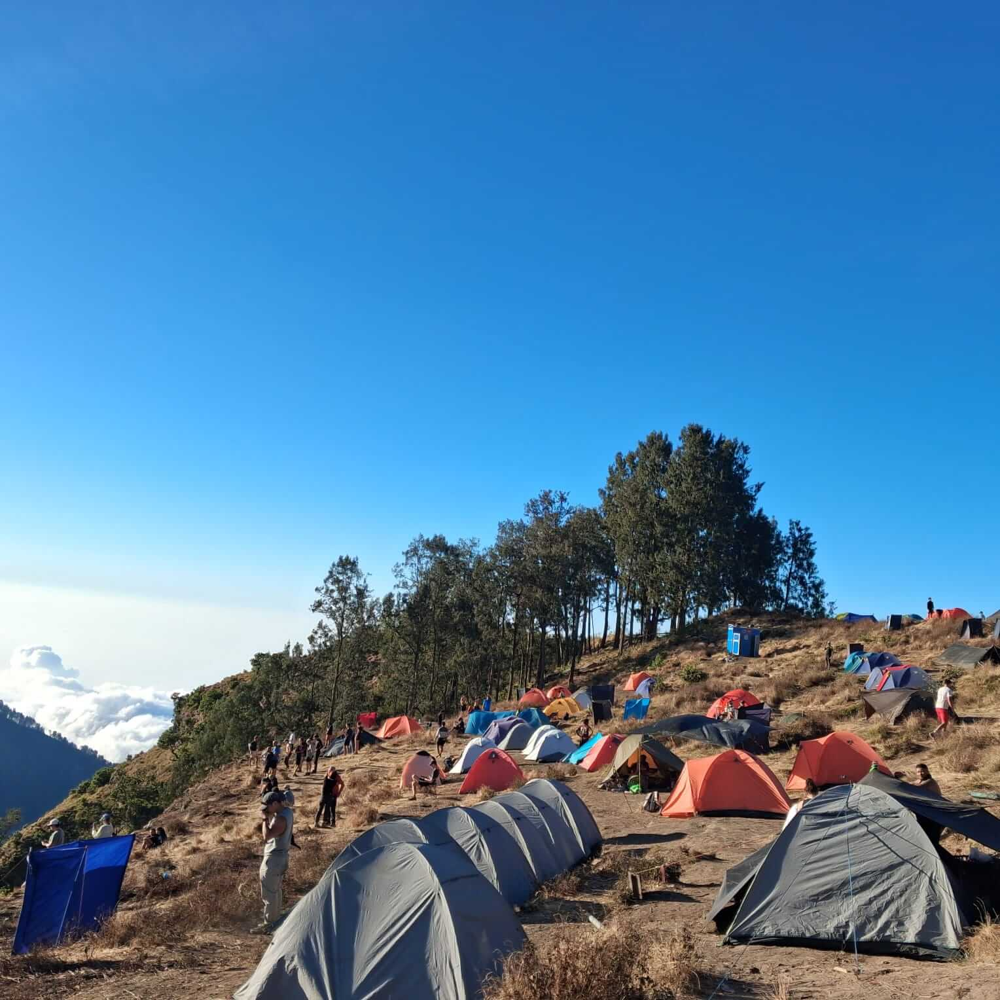
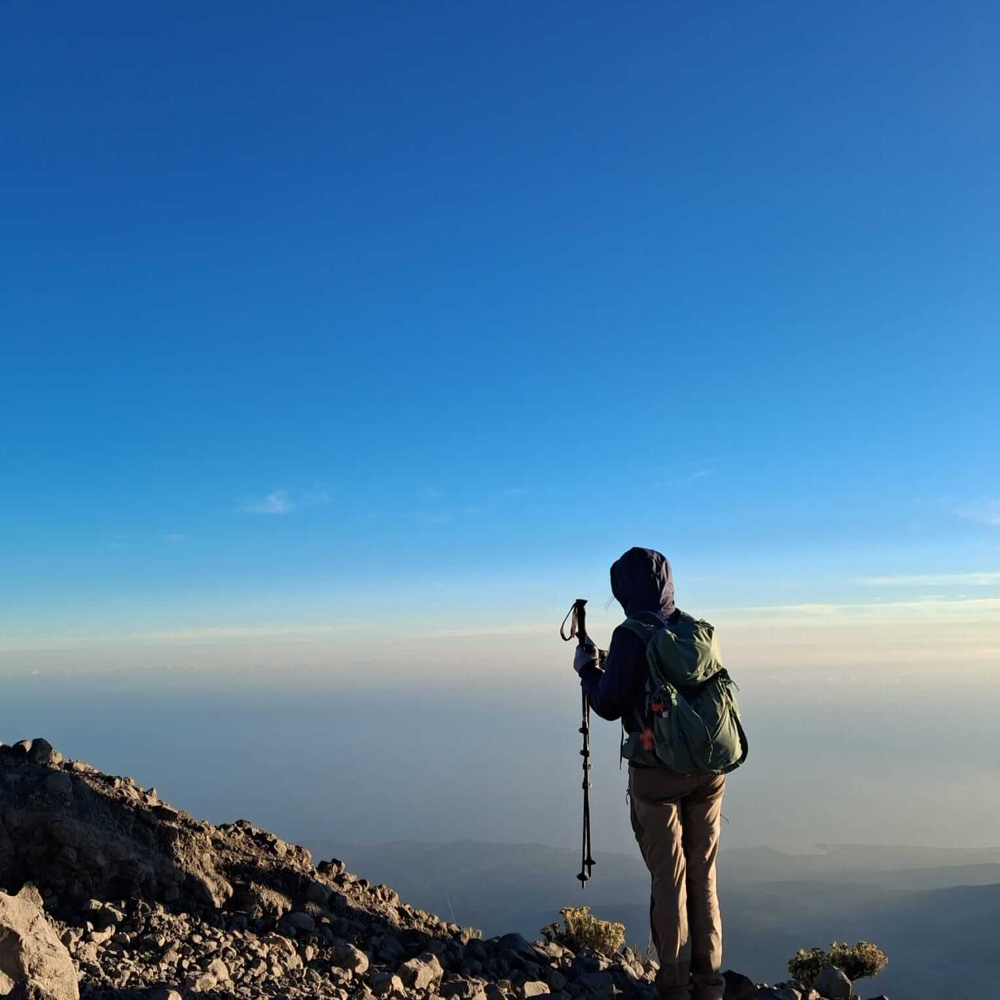
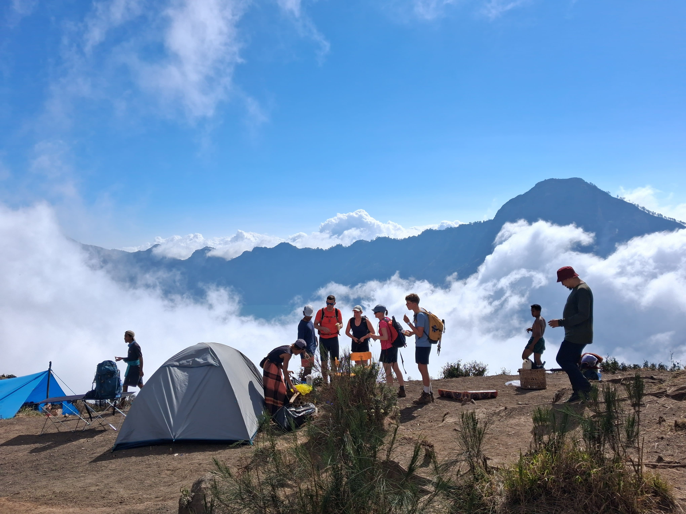
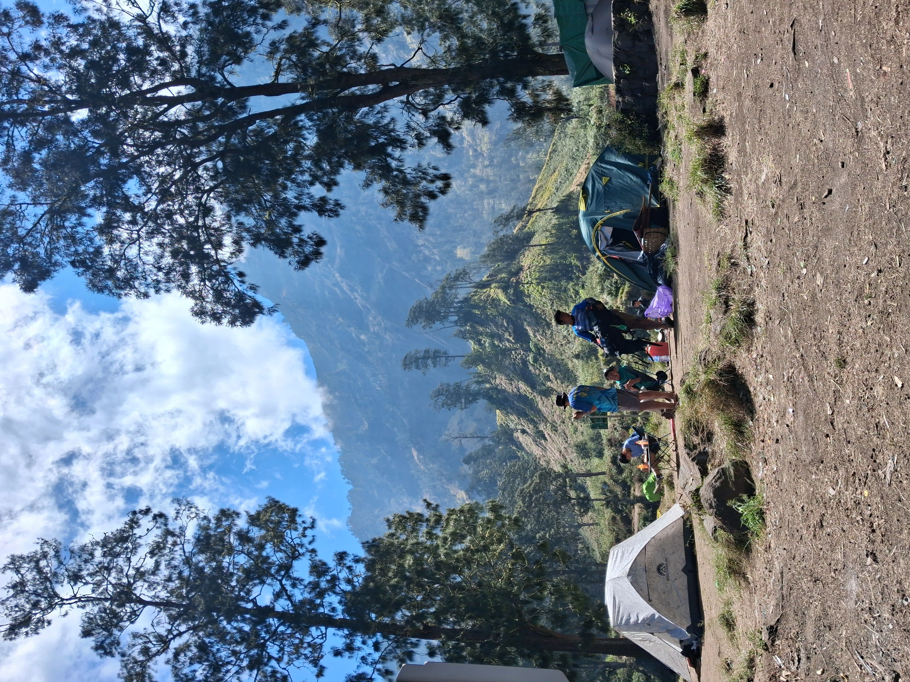

RINJANIOFFICIAL
Menjelajahi keindahan panorama terpopuler Gunung Rinjani dalam satu kali perjalanan melintasi savana Sembalun, Puncak 3.726 mdpl, Danau Segara Anak, pemandian air panas alami, hingga hutan hujan tropis Senaru.
Harga Mulai
USD 135/pax
Durasi
3 Hari 2 Malam
Titik Tertinggi
3.726 mdpl
Konsep Trip
Sharing Group (Maks. 8)
Kesulitan
Menantang

Bersama Rinjani Official, Anda akan bergabung dalam konsep Sharing Group (Small Group) dengan batas maksimal 8 pendaki per kelompok. Jumlah peserta yang terbatas ini memastikan setiap peserta mendapatkan pelayanan yang personal, aman, dan nyaman dari pemandu (guide) lokal profesional kami.
Mulai latihan kardio ringan (jalan cepat, jogging, naik-turun tangga) 3–4x seminggu untuk membangun stamina.
Cek ulang perlengkapan pribadi (sepatu, jaket, headlamp), pastikan sepatu sudah "dijinakkan" agar tidak lecet saat mendaki.
Istirahat cukup, hindari begadang, dan tiba di Senaru untuk sesi briefing bersama guide.
Pada ketinggian di atas 3.000 mdpl, sebagian pendaki dapat mengalami gejala AMS seperti sakit kepala ringan, mual, atau pusing akibat penurunan kadar oksigen. Guide kami terlatih mengenali gejala ini dan akan mengatur ritme jalan (pace) agar tubuh beradaptasi secara bertahap.
Tips mengurangi risiko: jaga hidrasi dengan minum air secara berkala, jalan dengan ritme stabil (jangan terburu-buru), dan segera informasikan ke guide apabila merasa tidak nyaman.
Peserta diharapkan tiba secara mandiri di Desa Senaru, Lombok Utara satu hari sebelum pendakian dimulai (H-1). Tim Rinjani Official akan menemui Anda di lokasi untuk sesi persiapan dan *briefing*.
Ketentuan Kedatangan:
• Transportasi Kedatangan: Tidak termasuk (*Self-arrival* ke Desa Senaru).
• Akomodasi H-1: Tidak termasuk (Peserta memesan penginapan mandiri di Senaru).
• Sesi Briefing Malam: Pemandu kami akan mendatangi penginapan Anda di Senaru sekitar pukul 19:00 WITA untuk pengecekan perlengkapan dan briefing rute.

Perjalanan darat dari Senaru menuju Desa Sembalun (layanan resmi pendakian).
Registrasi peserta di pintu masuk Taman Nasional Gunung Rinjani (TNGR).
Memulai pendakian melintasi padang savana Sembalun yang terbuka.
Istirahat sejenak di Pos 2 (1.500 mdpl).
Makan siang dan istirahat di Pos 3 (1.800 mdpl).
Melanjutkan pendakian menanjak (Bukit Penyesalan) menuju Plawangan Sembalun (2.639 mdpl).
Tiba di area campsite Plawangan Sembalun, menikmati matahari terbenam berlatar belakang Danau Segara Anak.
Makan malam, bersantai di bawah langit berbintang, dan istirahat persiapan summit attack.

Bangun, menikmati minuman hangat dan camilan ringan, lalu memulai pendakian puncak.
Tiba di Puncak 3.726 mdpl tepat saat sunrise. Menikmati pemandangan Pulau Lombok, Sumbawa, dan Bali.
Turun kembali ke area campsite Plawangan Sembalun untuk sarapan pagi.
Perjalanan turun menuju Danau Segara Anak (2.000 mdpl).
Tiba di danau, makan siang, dan berendam di kolam air panas alami untuk melepas lelah.
Mendaki kembali menuju Plawangan Senaru (2.641 mdpl).
Tiba di Plawangan Senaru, menikmati pemandangan Gunung Agung Bali & danau, dilanjutkan makan malam.

Sarapan pagi sambil menikmati pemandangan alam Plawangan Senaru.
Memulai perjalanan turun melintasi hutan hujan tropis Senaru yang lebat dan asri.
Makan siang di Pos 1 atau Pos Ekstra dalam kawasan hutan.
Tiba di Gerbang Pintu Senaru.
Pengantaran Pasca-Pendakian: Pengambilan barang di Senaru & pengantaran gratis ke area Bangsal, Senggigi, atau Mataram. Pendakian selesai!
Tim porter kami membawa tenda, peralatan masak, & logistik. Anda cukup membawa ransel harian (*daypack* 20–30L) berisi:
Ya, selama peserta dalam kondisi fisik sehat dan sudah mempersiapkan stamina beberapa minggu sebelumnya. Konsep sharing group maksimal 8 orang memungkinkan guide memberi perhatian personal kepada peserta yang belum berpengalaman.
Keselamatan adalah prioritas utama. Jika cuaca ekstrem atau jalur ditutup oleh pihak TNGR, guide akan menyesuaikan rencana perjalanan (termasuk kemungkinan menunda summit attack) dan berkoordinasi langsung dengan tim di lapangan.
Sinyal sangat terbatas dan tidak stabil di sebagian besar jalur, terutama di area Plawangan dan Danau Segara Anak. Sebaiknya informasikan kepada keluarga bahwa Anda mungkin tidak bisa dihubungi selama 2–3 hari.
Maksimal 8 peserta per grup (konsep sharing group), sehingga pengalaman mendaki tetap personal, aman, dan fleksibel mengikuti ritme jalan seluruh anggota.
Hubungi tim kami langsung via WhatsApp untuk cek ketersediaan tanggal, konfirmasi harga, dan proses pemesanan.
Mulai dari USD 135/pax
Bergabunglah dalam petualangan Sharing Group Rinjani 3D2N bersama Rinjani Official dan nikmati pengalaman mendaki yang aman, nyaman, dan tak terlupakan.